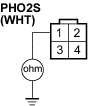

DTC P0131: Primary HO2S (Sensor 1) Circuit Low Voltage
- Reset the ECM (see page 11-4).
- Start the engine. Hold the engine at 3,000 rpm (min-1) with no load (in Park or neutral) until the radiator fan comes on.
- Check the primary HO2S (Sensor 1) output voltage with the scan tool during acceleration using wide open throttle.
Does the voltage stay at 0.5 V or less?
YES - Go to step 4.
NO - Intermittent failure, system is OK at this time. Check for poor connections or loose wires at the primary HO2S (Sensor 1) and at the ECM/PCM. 
- Check the fuel pressure (see page 11-116).
Is it normal?
YES - Go to step 5.
NO - Repair the fuel supply system.
- Turn the ignition switch OFF.
- Disconnect the primary HO2S (Sensor 1) 4P connector.
- Turn the ignition switch ON (II).
- Check the primary HO2S (Sensor 1) output voltage with the scan tool.
Does it stay at 0.5 V or less?
YES - Go to step 9.
NO - Replace the primary HO2S (Sensor 1).

- Turn the ignition switch OFF.
- Disconnect ECM connector A (31P).
- Check for continuity between the primary HO2S (Sensor 1) 4P connector terminal No. 1 and body ground.
PRIMARY HO2S (SENSOR 1) 4P CONNECTOR

Wire side of female terminal
Is there continuity?
YES - Repair short in the wire between the ECM (A6) and the primary HO2S (Sensor 1).
NO - Substitute a known-good ECM and recheck (see page 11-5). If symptom/indication goes away, replace the original ECM.